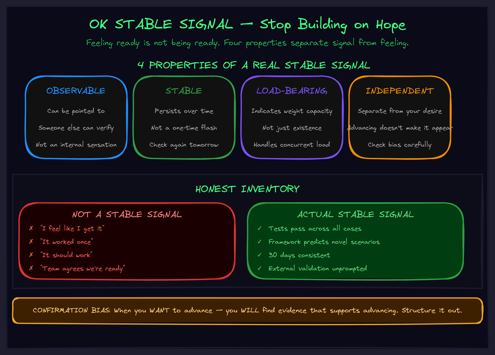

May 2026
OK Stable Signal: Stop Building on Hope
Feeling ready is not being ready. Explaining something is not having it stable. The difference between towers that stand and towers that collapse is a verification protocol most people skip.

The Collapse You Keep Repeating
You've lived this. Maybe not in these exact words, but the pattern is universal:
- Build the foundation. Feel like you understand it.
- Get excited. Start the next layer.
- The next layer reveals the foundation wasn't actually solid.
- Everything crumbles. Start over.
The product launch that fails because the infrastructure "should have" been ready. The AI system that breaks in production because it "worked in testing." The habit stack that collapses because the base habit "felt automatic."
The problem isn't that you built badly. It's that you advanced before you had evidence the foundation could hold weight. You confused the feeling of readiness with actual load-bearing capacity.
Those are not the same thing. And the gap between them is where most complex projects die.
Signals, Not Feelings
The concept comes from Buddhist practice, where practitioners don't get higher empowerments just because they feel ready. The teacher watches for specific signs — consistency of practice, particular experiences arising, behavioral indicators that are observable from outside. The student doesn't decide they're ready. The signals demonstrate it.
The same principle shows up everywhere that premature advancement is fatal:
- Everest expeditions: At each checkpoint, the question isn't "do you feel ready to continue?" It's "is your oxygen saturation above X? Is your equipment functioning? Is the route ahead viable?" Observable. Checkable. Independent of how confident you feel.
- Aviation checklists: Every item is a signal that the system is in the state required for the next phase. Your desire to take off doesn't change whether the hydraulics are pressurized.
- Software testing: The tests pass or they don't. Your opinion about whether the code is ready is irrelevant if the test suite says otherwise.
An OK stable signal has four properties. Miss any one of them and you don't have a real signal — you have a feeling dressed up as verification.
Observable
You can point to it. Someone else could check it. It's not an internal sensation.
Stable
It persists. It's not a one-time flash. Check again tomorrow — still there.
Load-Bearing
It indicates weight-carrying capacity, not just existence. "The API compiles" is not load-bearing. "The API handles edge cases under concurrent load" is.
Independent
The signal is separate from your desire to advance. You wanting to move on doesn't make the signal appear. If you're excited about the next phase and suddenly find evidence you're ready — that evidence is suspect.
The Honest Inventory
What masquerades as verification in most organizations:
NOT a stable signal
- "I feel like I get it"
- "I can explain it to myself"
- "It worked once"
- "It should work"
- "The team agrees we're ready"
Actual stable signal
- Tests pass across all cases
- Framework predicts novel scenarios correctly
- 30 days consistent without lapse
- External party validates without prompting
- No breaking changes in 2 weeks of active dev
The left column is what most people use. The right column is what actually prevents collapse. The gap between them is the exact size of the risk you're carrying.
Confirmation Bias Is the Enemy
The hardest part isn't defining signals. It's checking them honestly.
When you want to advance — and you almost always want to advance — you'll find evidence that supports advancing. The check becomes a formality. You go through the motions while already knowing the answer you want.
This is why Buddhist traditions have the teacher verify, not the student. The student wants to advance. The teacher has no such desire and can see clearly.
In the absence of a teacher, you need structural countermeasures:
- Wait 24 hours between deciding you're ready and actually verifying. Desire fades. Signal persists.
- Have someone else check. They don't share your desire to advance. They can see what you're motivated to overlook.
- Define failure modes explicitly. Before checking, write down: "What would make me NOT advance?" If you can't answer that question, you're not really checking. You're performing verification theater.
What to Do When Signals Are Absent
This is where most people go wrong. The signal isn't there, and instead of treating that as diagnostic information, they treat it as an obstacle to push through.
"The signal isn't there yet, but if I just keep going..."
That sentence is the collapse pattern in a nutshell. You're building on absent capacity. The weight will come. The foundation will fail. And the longer you kept going before checking, the bigger the collapse.
Absent signals are information. They're telling you what's actually missing:
- Maybe the understanding is incomplete — you know the concept but not its edge cases.
- Maybe the practice isn't consistent — it works when you're focused but not under pressure.
- Maybe the layer has a flaw that needs fixing — not more building on top, but repair at the foundation.
The correct response to an absent signal is always the same: diagnose why it's absent, address the underlying issue, then check again. Never bypass the check. The check is the thing keeping you from collapse.
Why This Matters for AI Systems
Every AI deployment I've seen fail at scale follows the collapse pattern. The proof of concept "worked" — meaning it produced output that looked right in a demo. That was treated as a stable signal. It wasn't. It was "it worked once" dressed up as verification.
Real AI deployment signals look like:
- The agent handles adversarial inputs without breaking (load-bearing, not just existence)
- Performance is consistent across 1000 runs, not just the 5 you showed the board (stable, not one-time)
- An engineer who didn't build it can operate it from the docs alone (independent, external validation)
- Error rates are measured and below threshold for 2 weeks straight (observable, persistent)
The agent architecture we build with clients has verification gates between every layer. Not because we're cautious. Because we've seen what happens when you skip them. The two minutes spent checking saves the two months spent recovering.
The Monday Morning Protocol
Before advancing to the next layer of anything you're building:
- Name the layer. What am I claiming is done? Say it out loud. If you can't name it precisely, it's not done.
- Define signals. What observable indicators would prove this layer can hold weight? Write them down. If you can't articulate them, you don't have real criteria.
- Check the four properties. For each signal: Is it observable? Stable? Load-bearing? Independent of my desire to advance?
- Verify honestly. If signals are present — advance with confidence. If absent — diagnose why. Address the gap. Don't bypass.
- Record. Write down what you checked and what you found. This creates accountability and calibrates your future verification instincts.
Two minutes. That's what stands between "the tower holds" and "everything collapses at Layer 3."
See the Full Picture
OK Stable Signal is the verification protocol that Towering depends on — each layer needs signals before the next one starts. It connects to Helming (signals precede the vision acquisition that helming provides), Calibration (learning what "stable" means for your specific context), and Externalization (signal definitions should be written down, not just remembered).
If you want to find out where your system is building on hope instead of evidence — and what the real signals should be — we should talk.